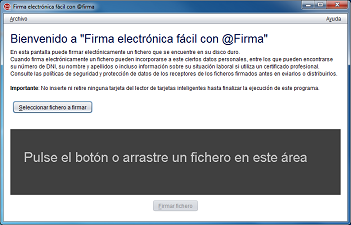

Desde esta pantalla puede selecionar el documento que desea firmar.
Para seleccionarlo, pulse el botón "Seleccionar fichero a firmar" o arrástrelo al área indicada
(el recuadro de color gris oscuro).
Al cargar el documento a firmar, se le mostrarán ciertos detalles sobre este:
En el recuadro habilitado para arrastrar el documento que deseaba firmar le habrá aparecido la información de este fichero. Además, si dispone de una aplicación predeterminada para este tipo de documentos, le aparecerá el botón "Ver fichero" con el que podrá abrirlo (se utilizará la acción predeterminada del sistema operativo para este tipo de ficheros).
El botón inferior de la pantalla le permitirá firmar el documento. Si el almacén de certificados de su sistema operativo todavía no hubiese terminado de cargarse, el botón aparecerá deshabilitado y con una imagen animada de espera. En ese caso, por favor, espere a que esta desaparezca y se habilite el botón. Una vez pulsado el botón, el programa actuará según el tipo de documento seleccionado:
| Tipo de documento | Imagen | Comportamiento |
|---|---|---|
| Adobe PDF | Se realizará una firma avanzada PDF sobre el documento (PAdES). | |
| XML | Se realizará una firma avanzada XML sobre el documento (XAdES). | |
| Documento binario | Se realizará una firma avanzada binaria sobre el documento (CAdES). | |
| Firma electrónica | Se agregará una nueva firma electrónica al documento de firma. |
De forma complementaria a los botones y elementos gráficos, puede usar también la barra de menú o los siguientes aceleradores de teclado:
Control (⌘ en Mac OS X) + A : Seleccionar fichero de firma.Control (⌘ en Mac OS X) + F : Firmar el fichero seleccionado.